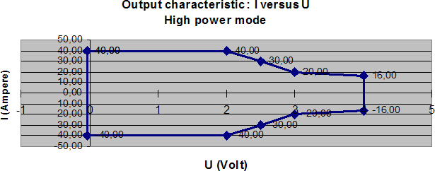
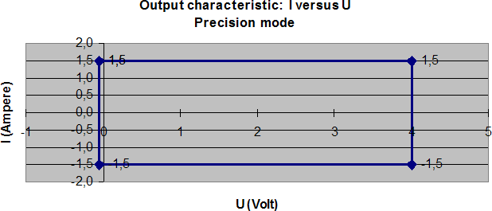
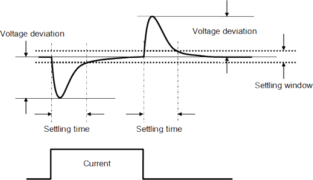
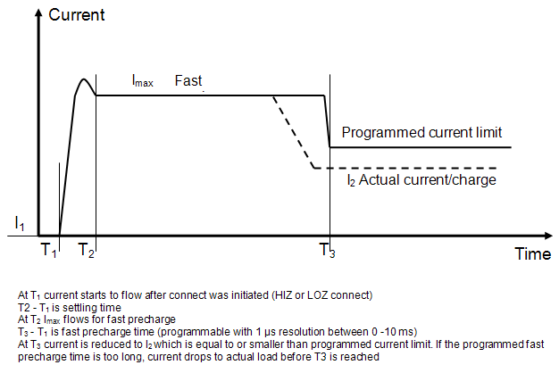
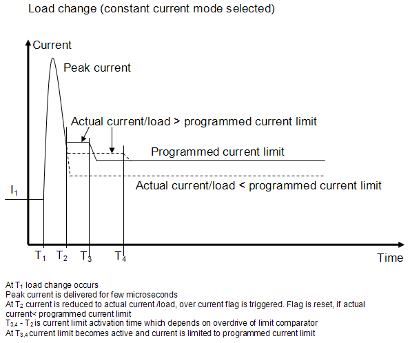
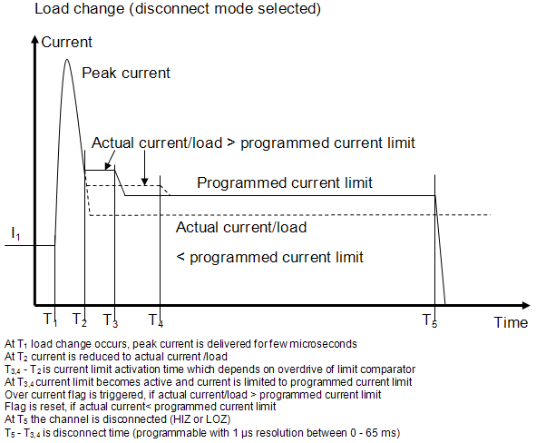

UHC4T specifications
 Download specifications PDF: V93000 SOC Device Power Supplies and VI Cards
Download specifications PDF: V93000 SOC Device Power Supplies and VI Cards
Configuration
Maximum number of channels per board |
4 |
Maximum source/sink current per channel |
40 A @ 2.0 V |
Maximum source/sink current per channel |
30 A @ 2.5 V |
Maximum source/sink current per channel |
20 A @ 3.0 V |
Maximum source/sink current per channel |
16 A @ 4.0 V |
Maximum source/sink current per board |
160 A @ 2.0 V |
Maximum source/sink current per system |
Maximum number of boards x 160 A |
Maximum voltage |
0 V to +4 V |
|
A test head1) |
Compact test head1) |
Small test head1) |
Large test head |
|---|---|---|---|---|
Maximum number of boards per system |
8 |
16 |
32 |
64 |
Maximum number of channels per system |
32 |
64 |
128 |
256 |


- The E8024UH UHC4T requires SmarTest 7.3.2 or higher
- Parallel connection (ganging) possible for any number of successive channels within a card and any number of E8024UH cards within a test head.
- The maximum current per board cannot be exceeded.
- The UHC4T requires a universal DC/DC. An adjacent card must be a UHC4T again (located in a pair of uneven/even card cage slots).
- Static sink power on a board or both boards that are connected to the same DC/DC can
be larger than the source power within these limits for each channel of a board:
- ≤ 0.6 V : ≤ 40 A
- ≤ 1.0 V: ≤ 7 A
- ≤ 2.5 V: ≤ 4 A
- ≤ 4.0 V: ≤ 2 A
- Dynamic sink power (dis-charge) is possible for supported capacitance.
- Either the high-power mode or the precision mode of a channel is active for force
and measure. During the range transition from 1.5 to 10/40 A, both modes are active to avoid
glitches.
On the pogo block, four DUT_CAP_ON lines (DUT_CAP_ON_1 through DUT_CAP_ON_4) are available to switch the big blocking capacitance on the DUT board on or off.
If the 40 A range is selected, the signal level is 0 V. If the 1.5 A range is selected, the signal level is 5 V.
- The UHC4T card requires no Enhanced Diagnostics Interconnect Board.
|
Range |
Resolution |
Accuracy |
|---|---|---|---|
Voltage force |
0 to 4.0 V |
200 µV |
±2.5 mV |
Voltage measure |
0 to 4.0 V |
200 µV |
±2 mV2) |
|
Current force (clamp)
|
10 to 40 A 0.5 to 10 A |
2 mA 2 mA |
±(100 mA + 0.5% of setting) ±(50 mA + 0.2% of setting) |
15 mA to 1.5 A |
100 µA |
±10 mA |
|
Current force ( n channels ganged) |
n x 0.5 A to n x 40 A |
n x 2 mA |
±(n x 100 mA + 0.5% of total ganged current) |
|
Current measurement
|
±40 A ±10 A |
2 mA 2 mA |
±(50 mA +0.5% of reading)3) ±(20 mA +0.2% of reading)3) |
±1.5 A |
100 µA |
±(1.5 mA +0.1 % of reading)4) |
|
±50 mA |
2.5 µA |
±(50 µA +0.1 % of reading)5) |
|
±2 mA |
100 nA |
±(2 µA +0.1 % of reading)6) |
|
Current measurement (n channels ganged) |
n x 40 A |
n x 2 mA |
±(n x 50 mA +0.5% of total current) |
Fast unganging is supported, resulting in single-channel accuracy for Idd-measurements. This includes DUT capacitance switching using the four DUT_CAP_ON lines.
|
|
Current force range, 10/40 A high-power mode |
Current force range, 1.5 A precision mode |
Current measurement range, high-power mode |
10/40A |
yes |
no |
Current measurement range, precision mode |
1.5 A |
no |
yes |
|
50 mA |
no |
yes |
|
2 mA |
no |
yes |
Explanation of terms

Settling time after load step (dI/dt = 2.5 A/µs)
At 2 V, settling into ±20 mV of programmed value, single-channel operation:
Load step |
270 µF (bulk) |
540 µF (bulk) |
|---|---|---|
10 A to 30 A |
0 µs |
0 µs |
30 A to 10 A |
0 µs |
0 µs |
At 2 V, settling into ±10 mV of programmed value, single-channel operation:
Load step |
270 µF (bulk) |
540 µF (bulk) |
|---|---|---|
10 A to 30 A |
15 µs |
15 µs |
30 A to 10 A |
18 µs |
18 µs |
Settling time after load step (dI/dt = 40 A/µs)
At 2 V, settling into ±20 mV of programmed value, single-channel operation:
Load step |
1080 µF (bulk), 100 µF (ceramic) |
2160 µF (bulk), 200 µF (ceramic) |
|---|---|---|
10 A to 30 A |
7 µs |
7 µs |
30 A to 10 A |
7 µs |
6 µs |
At 2 V, settling into ±10 mV of programmed value, single-channel operation:
Load step |
1080 µF (bulk), 100 µF (ceramic) |
2160 µF (bulk), 200 µF (ceramic) |
|---|---|---|
10 A to 30 A |
9 µs |
8 µs |
30 A to 10 A |
10 µs |
7 µs |
Settling time after load step (dI/dt = 400 A/µs)
At 2 V, settling into ±20 mV of programmed value, ganging four channels on one board:
Load step |
4 mF (bulk), 200 µF (ceramic) |
8 mF (bulk), 400 µF (ceramic) |
|---|---|---|
40 A to 120 A |
4 µs |
5 µs |
120 A to 40 A |
9 µs |
4 µs |
At 2 V, settling into ±10 mV of programmed value, ganging four channels on one board:
Load step |
4 mF (bulk), 400 µF (ceramic) |
8 mF (bulk), 400 µF (ceramic) |
|---|---|---|
40 A to 120 A |
10 µs |
7 µs |
120 A to 40 A |
13 µs |
10 µs |
Voltage deviation after load step (dI/dt = 2.5 A/µs)
At 2 V, single-channel operation:
Load step |
270 µF (bulk) |
540 µF (bulk) |
|---|---|---|
10 A to 30 A |
18 mV |
18 mV |
30 A to 10 A |
18 mV |
18 mV |
Voltage deviation after load step (dI/dt = 40 A/µs)
At 2 V, single-channel operation:
Load step |
1080 µF (bulk), 100 µF (ceramic) |
2160 µF (bulk), 200 µF (ceramic) |
|---|---|---|
10 A to 30 A |
53 mV |
35 mV |
30 A to 10 A |
55 mV |
35 mV |
Voltage deviation after load step (dI/dt = 400 A/µs)
At 2 V, ganging four channels on one board:
Load step |
4 mF (bulk), 200 µF (ceramic) |
8 mF (bulk), 400 µF (ceramic) |
|---|---|---|
40 A to 120 A |
50 mV |
35 mV |
120 A to 40 A |
80 mV |
60 mV |
Fast precharge |
|
|---|---|
Maximum supported current |
40 A (independent of actual voltage setting) is forced for a programmable time (0-10 ms), independent of actual current limit settings, if the 10/40 A current force range is selected |
Programmable timing resolution |
1 µs |
Precharge start |
When DUT is connected |
Mode selection |
Explicitly enabled or disabled with a firmware command (default condition is disabled) or implicitly with a programmed time in an equation |
- The fast precharge settings are identical for all channels of a gang group
- This mode is not enabled for voltage changes

Peak mode |
|
|---|---|
Peak current |
Peak current > 40 A for a few microseconds |
Mode selection |
Enabled, no control flag or alarm is set |
Current limit
Typical times to limit the current at a current limit of 10 A (one channel, no ganging, 1080 µF)
Load step |
Response time |
|---|---|
0 A to 40 A |
600 µs |
8 A to 24 A |
1.3 ms |
8 A to 16 A |
3.2 ms |
- Activation time of current limit depends on the actual load (overdrive of comparator)

Constant current mode |
|
|---|---|
Constant current mode |
Maximum allowed current is equal to actual programmed current limit |
Disconnect mode |
|
|---|---|
Disconnect mode |
If current exceeds the set current limit, the channel is disconnected |
Disconnect delay time |
Programmable (0 - 65 ms, timing resolution 1 µs) |
Mode selection |
Explicitly enabled or disabled with a firmware command (default condition is disabled) or implicitly with a programmed time in an equation |
- Time delay counter is triggered by the overcurrent flag.
- The settings are identical for all channels of a gang group.
- This mode is selectable in all current force ranges.
- The safety line is not activated (same behavior as HC-DPS).
Overvoltage protection |
|
|---|---|
Allowed voltage drop |
Individually programmable for force and return path between 0 - 500 mV, programming resolution is 1 mV |
Total allowed voltage drop |
500 mV |
Mode selection |
Always on, in all current ranges, except for the time the fast precharge mode is on |
Default voltage limit |
250 mV for both the force and return path |
- Force voltage at output of UHC4T is continuously compared to voltage at charge. If the difference is above the programmed limit, the output channel is disconnected. The voltage drop can be measured with the UHC4T.
- There are separate comparators for both the force and the return line on both the source and the sink path (four in total).
- The safety line is not activated in case of alarm (same behavior as HC-DPS).

Other protection mechanisms (one line per board) |
|
|---|---|
Safety line |
Connected to DUT board via pogo bock. Internally pulled high to +5V from DUT board with a resistor of 46.4k. When pulled low, all channels of UHC are disconnected. Can be used to simultaneously disconnect all UHC4T channels by an external alarm switch. |
+5 V from DUT board |
If not applied, all UHC4T channels are disconnected. Can be used to detect improperly connected DUT board. |
Disconnect state |
|
|---|---|
Input leakage current |
< 100 nA @ ≤ 3.4 V (AC relay open) |
Voltmeter mode (high impedance mode) |
|
|---|---|
Voltage range |
0 V to +4 V |
Voltage resolution |
200 µV |
Voltage accuracy |
±2 mV |
Input leakage current |
< 100 nA @ ≤ 3.4V (device connected to force and sense lines) |
Differential mode (using force sense and ground sense) |
|
|---|---|
Voltage range |
Same as voltage measure |
Voltage resolution |
Same as voltage measure |
Voltage accuracy |
Same as voltage measure |
High speed differential sampling mode (14 bit) |
|
|---|---|
Number of differential inputs |
1 per channel, individually addressable and usable within a gang chain |
Sample rate |
10 Msps (megasamples per second) |
Voltage window |
-2.5 V to +4 V |
Differential voltage range |
0 V to |3| V |
Voltage resolution |
400 µV |
DC accuracy |
2 mV |
Signal path bandwidth (-3 dB) |
5 MHz |
Total channel memory |
224 MB |
AWG mode (16 bit DAC) |
|
|---|---|
Step rate |
1 Msps (megasamples per second) |
Analog bandwidth (-3 dB, 3 V swing) |
3 kHz |
Total channel memory |
224 MB |
Vbump function |
Sequencer‑controlled, programmable |
Digitizer mode (16 bit ADC) |
|
|---|---|
Sample rate |
500 ksps (kilosamples per second) |
Signal path bandwidth (-3 dB) |
25 kHz |
Total channel memory |
224 MB |
Trigger functions |
|
|---|---|
Trigger |
Sequencer‑controlled (no external trigger pin required) |
Data analysis |
|
|---|---|
Data analysis |
Raw data is stored on board without software interaction and may be uploaded for further computation. Averaging, min and max number are calculated and stored on board. |
Result analysis |
Built-in result analysis available that indicates the measurement data is pass or fail against a user specified test limit. |
Compliance range (at disconnect state) |
|
|---|---|
Maximum external voltage at force input |
-3 V to +10 V |
Maximum external voltage at sense input |
-3 V to +10 V |
Maximum external voltage at sampling input |
-3 V to +10 V |
Maximum external voltage at safety line |
-3 V to +5.5 V |
Maximum external voltage at +5 V DUT signal |
-3 V to +5.5 V |
Settling time after re-programming (settling within given band of programmed step or within accuracy band, 2 x 270 µF capacitive charge) |
|
|---|---|
Voltage force (0-2 V step) |
200 µs (± 1% band) |
Current force / measure (0-10 A step) |
40 µs (+0 -20% band) 4 ms (± 1% band) |
Charge capacitance range |
|
|---|---|
Minimum required external capacitance |
270 µF per channel for high power mode 1 µF per channel for precision mode |
Maximum supported external capacitance with stability maintained |
10 mF per channel |
Recommended external capacitance |
1 - 2 mF, see also the explanation for the voltage/current specifications, above |
Tantalum (example for bulk capacitance) |
|
|---|---|
Kemet |
T530D477M2R5A(1)E010 - 470 µF/2.5V |
Panasonic |
OSCON 4SVPC560MX - 560 µF/4V |
Ceramic (example) |
|
|---|---|
TDK |
C1608X5R1E105K (1uF/25V/0603/X5R-Ceramic), array of 25 each |
TDK |
C1608X7R1H104K (100nF/50V/0603/X7R-Ceramic), array of 25 each |
Power ramp at probe |
|
|---|---|
Probe card protection |
User-programmable sequence for both shorts and open-check, using the precision mode |
Thermal control |
|
|---|---|
Current monitor |
Current monitor output per channel provides voltage proportional to the output current, 1 V per 10 A current, reference potential is GSn- line (Ground Sense). Note Sense-lines are sensitive to noise. It it is recommended to use the
GND-plane close to the connection of the GSn-line.
|
Typical accuracy |
±5 mV ± 1% of reading |
Functional changes
- Introduced in SmarTest 7.3.2